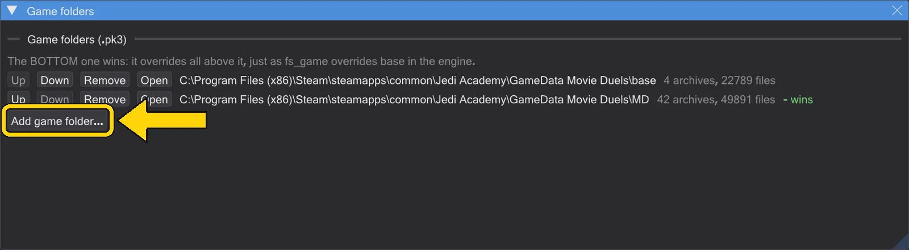
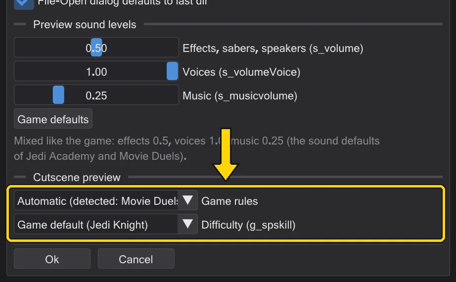

Settings and updates
Where the program keeps its paths and options, how to change keys, and how updates arrive.
Game folders#
Edit → Game folders lists the folders whose .pk3 archives the program reads, with Up, Down, Remove and Open for each. The bottom one wins over everything above it, as fs_game overrides base in the engine. A folder without archives says so - then the path is wrong.

Jedi Outcast (JK2)#
BehavEd-Remake also works with the original Jedi Outcast. Its compiled scripts (.ibi, version 1.57) and its maps have the same format as in Jedi Academy, and ICARUS has the same commands. In Prefs → Game rules, Jedi Outcast (JK2) is the third rule set next to OpenJK and Movie Duels; the model for it is the JK2 game code in OpenJK (codeJK2).
- Command set: under Jedi Outcast the lists for animations, mission objectives, behaviour states and SET_ fields come from JK2 (
data/jk2). Of the 1356 scripts in Jedi Outcast'sassets0.pk3, 1352 compile back byte for byte; the check leaves 326 notes, which are real mistakes in Raven's scripts. An own command file in the preferences always wins. - Game folders: Jedi Outcast has its own list in Edit → Game folders (Jedi Outcast folders (.pk3)). Both games have files with the same name but different content, so the two lists are never mixed; the list of the active rule set is used. Add game folder puts a Jedi Outcast folder into its list by itself.
- Automatic: Jedi Outcast when only Jedi Outcast folders are set up, or when a Jedi Outcast mission is opened with Load mission (
jk2sp.exenext to the folder, or JK2 maps such askejim_post). A Movie Duels folder always means Movie Duels; when it is unclear, OpenJK. - Figures: NPCs come from
ext_data/NPCs.cfg, the player iskyle(also in scripts), human figures use JK2's skeleton with 72 bones, and JK2's NPC classes pick JK2's figures. Lightsabers need no.sabfile: the hilt and the blade length come from the NPC class (Desann 48, reborn 32, everyone else 40) and the colour fromsaberColorin NPCs.cfg. - Walking and camera: NPCs walk to navgoals with JK2's navigator: straight when the way is free, otherwise along the waypoint network from
maps/<map>.nav(built from the waypoints when the file is missing or does not match the map), with JK2's speeds - running starts at full speed, walking speeds up step by step, and NPCs slow down shortly before the goal. Weapons come from JK2's NPC table, an NPC Kyle takes the player's weapon, and the blade flickers like in JK2. The camera shows FOLLOW and shake one frame later, camera ROFFs ignore notes, the swamp water inyavin_swampis not solid, and rain and snow follow JK2.dowaiton a SET_NAVGOAL that finds no goal waits forever, as in the game.
Preferences#
Edit → Prefs (or Prefs in the action column, Alt+P) holds the options of the original BehavEd and those of the cutscene preview:
- Directories: Script Path, Command Description File (the
.bhcthat defines every command - Reload command model reads it again), Source Files Path. - Re-open last file at startup, Alpha-sort edit pulldowns, Use Alternative Coloured Icons, Yes/No query on Open/New/Exit, File-Open dialog defaults to last dir.
- Preview sound levels: Effects, sabers, speakers (s_volume), Voices (s_volumeVoice), Music (s_musicvolume) - like the game's sound settings; Game defaults restores 0.5 / 1.0 / 0.25. How the preview sounds: Sound like in the game.
- Cutscene preview → Game rules decides which game the cutscene preview imitates: OpenJK (plain Jedi Academy) or Movie Duels, whose game code differs in places - NPC turn speeds per class and difficulty, how often NPCs re-steer and turn (OpenJK every 100 ms, Movie Duels every 50 ms), the default difficulty, lightsaber clashes, cg_fovAspectAdjust and the game window, ROFF sounds on figures. The third choice is Jedi Outcast (Jedi Outcast (JK2)). Automatic picks Movie Duels when a Movie Duels folder is among the game folders, Jedi Outcast for Jedi Outcast folders, otherwise OpenJK; the status list names the rule set when a map loads. Aspect ratio and cg_fovAspectAdjust themselves are under View settings → Game screen (Preview and looking through).
- Difficulty (g_spskill): Padawan, Jedi, Jedi Knight, Jedi Master - the game's g_spskill. The first entry is the game's default (Movie Duels Jedi Knight, OpenJK Padawan). Like the game, it changes how fast stormtroopers, reborn and some other NPCs turn, how fast tusken raiders walk and run (from Jedi Knight on) and how close two lightsabers must come to clash. Entities the map marks for other difficulties (or
notsingle) are left out, as the game removes them when the map loads - also an NPC that a script names but whose spawner is removed this way (the script'saffecton it does nothing). Changing it rebuilds the preview at once. - Language, theme and interface size are in the View menu.

Changing keys#
Edit → Keyboard shortcuts lists every action that has a key. Click a shortcut and press the new key; Esc cancels, Backspace clears. A key that is already taken is named. The defaults are in Keyboard shortcuts.
Updates and changelog#
Help → Check for updates asks GitHub for a newer version and shows what is new; Download and install replaces the program files (with the single .exe, just the program, whatever its file name) and offers a restart. The switch next to it decides whether this happens at startup. Help → Changelog shows what was fixed and added, version by version, in your language - it also opens once by itself after an update.